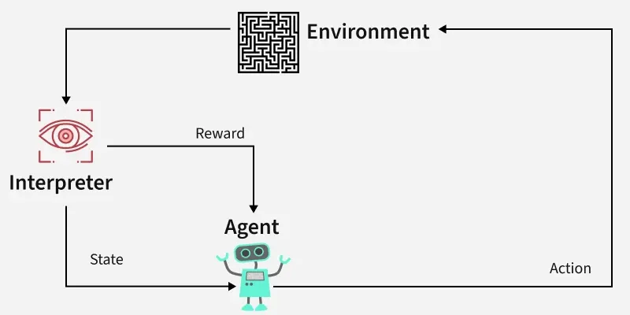
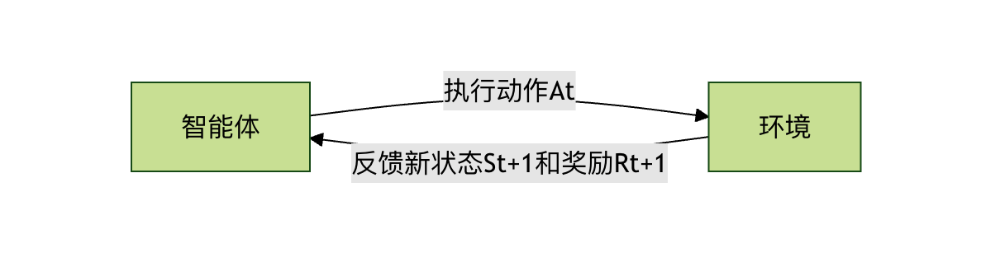
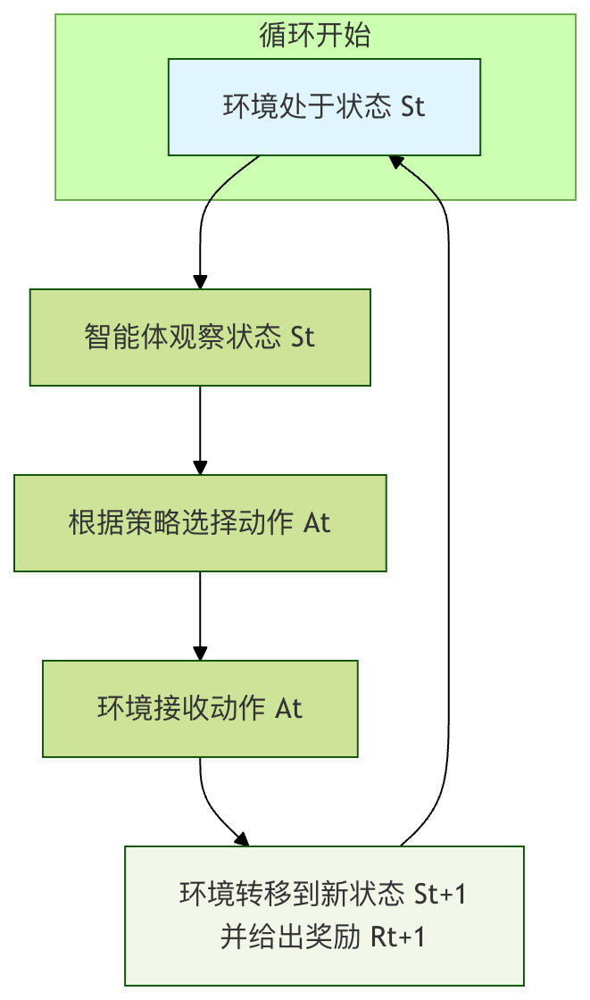
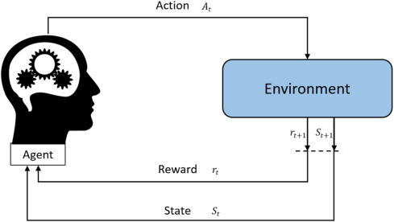

Reinforcement Learning Basic Framework
Imagine you are teaching a puppy to learn the "sit" command. You wouldn't directly tell it how every muscle in the sitting movement should move; instead, you would do this:
- You give the sit command.
- The puppy tries some action (it may sit, lie down, or spin around).
- If it sits, you immediately give it a treat as a reward.
- If it does wrong, you give no reward, or give a slight "not right" signal.
- After many attempts, the puppy gradually understands: after hearing "sit", performing the sitting action can earn a treat. So it learns the command.
Reinforcement learningis about letting a computer (or agent) learn, like this puppy, how to make a series of decisions to achieve a long-term goal by interacting with the environment and based on the rewards or punishments received.
Compared with the familiarsupervised learning(a "teacher" with standard answers) andunsupervised learning(finding the internal structure of data), it is fundamentally different. Reinforcement learning islearning from experience, and its core istrial and error与delayed reward。
Core Elements of Reinforcement Learning
To formalize this learning process, we introduce several core concepts that together constitute the basic framework of reinforcement learning.
Agent and Environment
This is the most basic interactive relationship in reinforcement learning.
- Agent:It is the subject of learning, the entity that makes decisions. In the above example, the puppy is the agent. In a computer, it can be an algorithm, a program, or a robot.
- Environment:It is the external world in which the agent exists and with which the agent interacts. For the puppy, the environment is you, treats, the floor, and all external things. The environment receives the agent's actions and provides new states and rewards.

Their relationship is a continuous loop:Agent observes environment -> takes action -> environment feeds back new state and reward -> agent observes again...

State, Action, and Reward
These are three key pieces of information describing each interaction.
- State:At a given moment, a complete description of the environment's situation. For example, in the puppy training example, the state may include: the puppy is standing, you have a treat in your hand, and you just said "sit". The state is the basis for the agent's decisions.
- Action:The choices the agent can make in a certain state. For the puppy, the action set might be {sit, lie down, stand, spin...}.
- Reward:A scalar signal that the environment feeds back to the agent after the agent performs an action. It defineswhat is good and what is bad. Reward is the only compass for the agent's learning. Giving the puppy a treat is a positive reward (+1); saying "not right" can be seen as a slight negative reward (-0.1).
Policy
A policyis the brain or behavior rule of the agent. It defines which action the agent should take in any given state.
A policy can be a simple lookup-table function, or a complex deep neural network. The ultimate goal of reinforcement learning is to find anoptimal policy, such that thelong-term cumulative reward obtained by the agent from the environment is maximized。
- .Example: A simple policy might be: if the state is "hear the sit command", then choose the sit action with 90% probability and choose other actions with 10% probability.
Value Function
Rewards tell the agentthe currentaction's immediate good or bad, but the agent needs to care more aboutlong-termreturns.A value functionis the tool used to measure this long-term return.
It answers the question: starting from the current state and following a certain policy all the way, how much total reward can Iexpectto obtain?
- State value function V(s): measures the long-term value of following the current policy in state
ss. - Action value function Q(s, a): measures, in state
ss,after executing a specific actionaa, the long-term value of then following the current policy. It is more commonly used than the state value function because it can directly guide action selection.
Why do we need a value function?Imagine a chess game. Capturing an opponent's pawn gives an immediate small reward, but it may lead to being checkmated ten steps later and receiving a huge negative reward. Through calculation and estimation, the value function can help the agent avoid this kind of behavior that covets small gains and loses the whole game.
Core Interaction Process: Markov Decision Process
Reinforcement learning problems are usually modeled as aMarkov decision process (MDP). This name sounds complex, but it is actually just a standard framework that organizes the elements mentioned above in mathematical form and describes the interaction between the agent and the environment.
The core idea of MDP is:The next state and reward depend only on the current state and the current action taken, and are independent of the previous history(i.e., the Markov property).
A complete MDP interaction cycle is as follows:

- At time step
tt, the environment is in stateS_t。 - S_t. The agent observes this state.
- The agent, according to its policy
ππ, selects an actionA_t。 - A_t. The environment receives this action.
- The environment, according to its internal dynamic rules, transitions to the next state
S_{t+1}S_{t+1}, and produces a scalar rewardR_{t+1}R_{t+1}, which is fed back to the agent. - The time step advances (
t = t+1t = t+1), and a new loop begins.

The agent's goal is, through continuously experiencing this loop, to learn a policyπ*π, such that starting from any initial state, theexpected value of cumulative reward (i.e., return) is maximized。
A Simple Code Example: Grid World
Let's use a classic grid world example to make these concepts concrete. Suppose there is a 4x4 grid. The agent starts from the starting pointSS, with the goal of reaching the terminal pointGT. Reaching an obstacle#X means failure, and each step has a small penalty (to encourage reaching the end as soon as possible).
S . . . . # . . . . # . . . . G
- State: the coordinates of each grid cell, such as (0,0), (0,1)... (3,3). There are 16 states in total.
- Action: {up, down, left, right}.
- Reward：
- : Reaching T: +10
G： +10 - Hitting X
#or going out of bounds: -5 - Other normal moves: -0.1 (encourages efficient paths)
- : Reaching T: +10
- Policy: We need to learn a table that records, in each state (grid cell), which direction to go.
Below is an extremely simplified Q-learning (a classic reinforcement learning algorithm) pseudocode demonstration, used to learn the optimal path in this grid world.
Example
import random
from typing import Dict, List, Tuple
# ====================== 1. Environment Simulation (Grid World) ======================
class GridWorldEnv:
"""A simple grid world environment for demonstrating Q-Learning"""
def __init__(self, grid_size: Tuple[int, int] = (5, 5),
start_pos: Tuple[int, int] = (0, 0),
goal_pos: Tuple[int, int] = (4, 4),
obstacle_pos: List[Tuple[int, int]] = [(1, 1), (2, 2), (3, 1)]):
self.grid_size = grid_size
self.start_pos = start_pos
self.goal_pos = goal_pos
self.obstacle_pos = obstacle_pos
self.current_pos = start_pos
# Action definitions: 0-up, 1-down, 2-left, 3-right
self.actions = ['up', 'down', 'left', 'right']
self.num_actions = len(self.actions)
def reset(self) -> int:
"""Reset the environment and return the index of the initial state"""
self.current_pos = self.start_pos
return self.pos_to_state(self.current_pos)
def pos_to_state(self, pos: Tuple[int, int]) -> int:
"""Convert coordinate position to state index"""
return pos[0] * self.grid_size[1] + pos[1]
def state_to_pos(self, state: int) -> Tuple[int, int]:
"""Convert state index to coordinate position"""
return (state // self.grid_size[1], state % self.grid_size[1])
def random_action(self) -> int:
"""Randomly choose an action (exploration)"""
return random.randint(0, self.num_actions - 1)
def action_to_direction(self, action: int) -> str:
"""Convert action index to direction name"""
return self.actions[action]
def step(self, action: int) -> Tuple[int, float, bool]:
"""
Execute action, return (next_state, reward, done)
Optimization point: fix the bug where obstacle reward cannot be triggered, simplify logic judgment
"""
x, y = self.current_pos
# Update position according to action
if action == 0: # up
x = max(0, x - 1)
elif action == 1: # down
x = min(self.grid_size[0] - 1, x + 1)
elif action == 2: # left
y = max(0, y - 1)
elif action == 3: # right
y = min(self.grid_size[1] - 1, y + 1)
# Check whether an obstacle is hit (core fix: first record whether the obstacle is hit, then handle position)
new_pos = (x, y)
hit_obstacle = False # Mark whether an obstacle is hit
if new_pos in self.obstacle_pos:
hit_obstacle = True # Record obstacle collision status
new_pos = self.current_pos # Obstacle hit, position unchanged
self.current_pos = new_pos
next_state = self.pos_to_state(new_pos)
# Calculate reward (based on hit_obstacle recorded in advance, fix the contradiction in the original logic)
if new_pos == self.goal_pos:
reward = 100.0 # Reached the goal, large reward
done = True
elif hit_obstacle: # Based on the flag, not the modified new_pos
reward = -50.0 # Hit an obstacle, penalty
done = False
else:
reward = -1.0 # Small penalty for each step, encouraging reaching the goal quickly
done = False
return next_state, reward, done
# ====================== 2. Q-Learning Main Program ======================
if __name__ == "__main__":
# Optimization 1: Fix the random seed to ensure reproducible experiment results
random_seed = 42
random.seed(random_seed)
np.random.seed(random_seed)
# Initialize the environment
env = GridWorldEnv(
grid_size=(5, 5), # 5x5 grid
start_pos=(0, 0), # start point
goal_pos=(4, 4), # goal point
obstacle_pos=[(1,1), (2,2), (3,1)] # obstacle positions
)
# Calculate the number of states
num_states = env.grid_size[0] * env.grid_size[1]
num_actions = env.num_actions
# Initialize the Q-table (action-value function) with shape [num_states, num_actions]
Q_table = np.zeros([num_states, num_actions])
# Define hyperparameters
learning_rate = 0.1 # learning rate
discount_factor = 0.9 # discount factor
epsilon = 0.1 # exploration rate
total_episodes = 1000 # number of training episodes
# Training process
for episode in range(total_episodes):
state = env.reset() # Reset the environment to the start point, get the initial state S
done = False # Flag whether this episode ends
total_reward = 0 # Record the total reward for this episode
while not done:
# 1. ε-greedy policy for action selection
if random.uniform(0, 1) < epsilon:
action = env.random_action() # Exploration: randomly choose an action
else:
# Exploitation: choose the action with the highest Q value, handle ties
q_values = Q_table[state]
max_q = np.max(q_values)
best_actions = np.where(q_values == max_q)[0]
action = random.choice(best_actions) # Randomly choose one if there is a tie
# 2. Execute the action and interact with the environment
next_state, reward, done = env.step(action)
total_reward += reward
# 3. Update the Q-table (core: Q-Learning formula)
# Q(S, A) = Q(S, A) + α * [ R + γ * max(Q(S', a')) - Q(S, A) ]
old_value = Q_table[state, action]
next_max = np.max(Q_table[next_state]) # Maximum Q value of the next state
# Compute the target Q value
target = reward + discount_factor * next_max
# Update the Q value
new_value = old_value + learning_rate * (target - old_value)
Q_table[state, action] = new_value
# 4. Move to the next state
state = next_state
# Print training progress every 100 episodes
if (episode + 1) % 100 == 0:
print(f"Episode {episode + 1}/{total_episodes}, Total Reward: {total_reward:.1f}")
# ====================== 3. Extract the Optimal Policy (optimized printing format, more intuitive) ======================
policy: Dict[int, str] = {}
print("\n=== Optimal policy after learning (grid layout) ===")
# Optimization 2: Print in grid shape to intuitively display the policy of the entire grid
grid_rows, grid_cols = env.grid_size
for row in range(grid_rows):
row_str = []
for col in range(grid_cols):
pos = (row, col)
state = env.pos_to_state(pos)
if pos in env.obstacle_pos:
row_str.append(" Obstacle ")
elif pos == env.goal_pos:
row_str.append(" Goal ")
elif pos == env.start_pos:
# Also mark the start point and its optimal action
best_action_idx = np.argmax(Q_table[state])
best_action = env.action_to_direction(best_action_idx)
row_str.append(f" Start({best_action}) ")
else:
best_action_idx = np.argmax(Q_table[state])
best_action = env.action_to_direction(best_action_idx)
policy[state] = best_action
row_str.append(f" {best_action} ")
print("|".join(row_str))
# ====================== 4. Test the Optimal Policy ======================
print("\n=== Test the optimal policy ===")
state = env.reset()
done = False
steps = 0
path = [env.state_to_pos(state)]
while not done and steps < 50: # Maximum 50 steps to prevent infinite loops
best_action_idx = np.argmax(Q_table[state])
next_state, reward, done = env.step(best_action_idx)
current_pos = env.state_to_pos(next_state)
path.append(current_pos)
state = next_state
steps += 1
print(f"Path: {path}")
print(f"Steps to reach the goal: {steps}")
print(f"Reached the goal: {env.current_pos == env.goal_pos}")
Code Explanation：
Q_tableis the core action-value function, with shape[状态数量，动作数量](in the example, 25×4, corresponding to the 25 states of the 5×5 grid and the 4 actions of up/down/left/right).Q_table[s, a]Denotes, for states(the index of the grid position), the long-term value of executing actiona(0-3 correspond to up/down/left/right), all initially 0, updated step by step through training.env.step(action)Simulates the core interaction logic of the Markov Decision Process (MDP): after inputting an action index, it first updates the agent's grid position (if hitting an obstacle, the position remains unchanged), then returns a triple:(next_state, reward, done)——next_stateis the index of the new state,rewardis the differentiated reward (goal +100, obstacle -50, each step -1),doneindicates whether the goal has been reached (end of this episode).- The core update formula of Q-Learning
Q(S,A) = Q(S,A) + α * [R + γ * max(Q(S', a')) - Q(S,A)]is decomposed and implemented in the code: first get the current Q valueold_value, then calculate the maximum Q value of the next statenext_max, then compute the target valuetarget = 奖励 + 折扣因子 × 下一状态最大Q值, and finally use the learning rateαto blend the old value and the target value, obtaining the updated Q value, thereby iteratively correcting the action value. epsilon(exploration rate) balances "exploitation" and "exploration" through the ε-greedy policy: withepsilonprobability, randomly choose an action (explore the unknown); with1-epsilonprobability, choose the action with the largest Q value in the current state (exploit the known optimum). The code also handles the tie case of Q values: if multiple actions have the same Q value, one is chosen randomly, avoiding policy lock-in caused by a single fixed choice.- The code additionally implements bidirectional mapping between states and grid positions (
pos_to_state/state_to_pos), conversion between actions and direction names (action_to_direction), and also policy extraction and testing after training: traverse all states, take the action with the largest Q value in each state as the optimal policy, and verify the path and number of steps from the start point to the goal point under that policy.
Episode 100/1000, Total Reward: 93.0 Episode 200/1000, Total Reward: 90.0 Episode 300/1000, Total Reward: 92.0 Episode 400/1000, Total Reward: 90.0 Episode 500/1000, Total Reward: 93.0 Episode 600/1000, Total Reward: 93.0 Episode 700/1000, Total Reward: 91.0 Episode 800/1000, Total Reward: 93.0 Episode 900/1000, Total Reward: 93.0 Episode 1000/1000, Total Reward: 93.0 === 学习完成后的最优策略 === 位置 (0, 0): 最优动作 = right 位置 (0, 1): 最优动作 = right 位置 (0, 2): 最优动作 = down 位置 (0, 3): 最优动作 = down 位置 (0, 4): 最优动作 = down 位置 (1, 0): 最优动作 = up 位置 (1, 1): 最优动作 = 障碍物 位置 (1, 2): 最优动作 = right 位置 (1, 3): 最优动作 = down 位置 (1, 4): 最优动作 = left 位置 (2, 0): 最优动作 = down 位置 (2, 1): 最优动作 = down 位置 (2, 2): 最优动作 = 障碍物 位置 (2, 3): 最优动作 = down 位置 (2, 4): 最优动作 = down 位置 (3, 0): 最优动作 = down 位置 (3, 1): 最优动作 = 障碍物 位置 (3, 2): 最优动作 = right 位置 (3, 3): 最优动作 = right 位置 (3, 4): 最优动作 = down 位置 (4, 0): 最优动作 = right 位置 (4, 1): 最优动作 = right 位置 (4, 2): 最优动作 = right 位置 (4, 3): 最优动作 = right 位置 (4, 4): 最优动作 = 终点 === 测试最优策略 === 路径: [(0, 0), (0, 1), (0, 2), (1, 2), (1, 3), (2, 3), (3, 3), (3, 4), (4, 4)] 到达终点步数: 8 是否到达终点: True
Summary and Practical Thinking
The basic framework of reinforcement learning can be summarized as:The agent interacts with the environment in a Markov decision process manner, and based on the reward signals obtained, continuously optimizes its policy (usually by learning and updating value functions), with the ultimate goal of maximizing long-term cumulative reward.
| Concept | Analogy | Role in reinforcement learning |
|---|---|---|
| Agent | Learning puppy / AI playing chess | The decision-making subject that executes the learning algorithm |
| Environment | Trainer / Chessboard rules | External system that provides states and reward feedback |
| State | Puppy's posture / Chessboard position | Current information basis for the agent to make decisions |
| Action | Sit down / Move a piece | Choices the agent can make |
| Reward | Snack / Win-or-lose result | Immediate signal evaluating the quality of an action; the learning compass |
| Policy | The command response the puppy has learned | Mapping rule from states to actions; the goal of learning |
| Value function | Long-term evaluation of the situation | Evaluates the long-term value of a state or action; it is the basis for policy optimization |
Click to share notes
<p style="font-size:14px;">The note must be an extension of the content of this article!</p><br> <p style="font-size:12px;"><a href="../tougao.html" target="_blank">Article submission, click here</a></p> <p style="font-size:14px;"><a href="../w3cnote/runoob-user-test-intro.html" target="_blank">How to get a registration invitation code</a></p> <h3 class="text-muted"><i class="fa fa-info-circle" aria-hidden="true"></i> You must <a href=";.html" class="runoob-pop">log in</a> before sharing a note!</h3> <p><a href="../w3cnote/runoob-user-test-intro.html" target="_blank">How to get a registration invitation code</a></p>